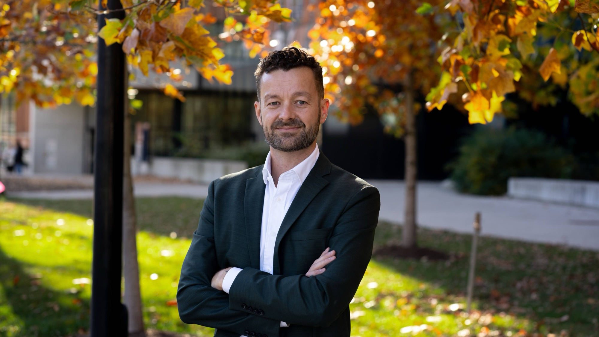

The book

Psychopathy Unmasked
The Rise and Fall of a Dangerous Diagnosis
Psychopathy assessments inform sentencing, parole and transfer decisions for an estimated hundreds of thousands of offenders in North America each year. This book surveys the research and finds that people labelled psychopaths are not meaningfully more dangerous than, or psychologically different from, other offenders. It argues that the legal use of psychopathy assessments should end.
The MIT Press, June 2025. Paperback, 328 pages. ISBN 978-0-262-55220-2
Order from MIT PressSelected publications Most recent first
- 2023How to keep unreproducible neuroimaging evidence out of court: A case study in fMRI and psychopathyPsychology, Public Policy, and Law. With J. Jalava and S. GriffithsArticle
- 2022Are psychopathy assessments ethical? A view from forensic mental healthJournal of Threat Assessment and Management. With P. Koch, J. Jalava and S. GriffithsArticle
- 2022More phenomenology in psychiatry? Applied ontology as a method towards integrationThe Lancet Psychiatry. With L. Maschião, V. Piedade, G. Messas and J. HastingsArticle
- 2021Is the psychopathic brain an artefact of coding bias? A systematic reviewFrontiers in Psychology. With J. Jalava, S. Griffiths and E. AlcottSystematic review
- 2020Are Psychopathy Checklist (PCL) psychopaths dangerous, untreatable, and without conscience? A systematic review of the empirical evidencePsychology, Public Policy, and Law. With J. Jalava and S. GriffithsSystematic review
- 2020Are psychopaths moral-psychologically impaired? Reassessing emotion-theoretical explanationsMind & LanguageArticle
Expertise
Available for legal consultation, public talks and ontology work. Fees depend on the scope of the job, with pro bono work for organisations that advance public understanding of science.
Law and personality disorders
Guidance for legal teams on psychopathy and antisocial personality disorder, including how to respond to expert evidence that presents these labels as diagnoses with fixed prognoses.
Talks and lectures
Talks on science and society, forensic psychology and epistemology, tailored to courts, bar associations, universities and public audiences.
Ontology and taxonomy
Ontology development for structuring data in the health and cognitive sciences, grounded in Basic Formal Ontology and OBO Foundry work.
About

Rasmus Rosenberg Larsen is Associate Professor of Forensic Epistemology and Philosophy of Science at the University of Toronto Mississauga, and an Affiliated Scientist at the National Center for Ontological Research.
His research appears in The Lancet Psychiatry; Psychology, Public Policy, and Law; and Philosophical Psychology. He holds a PhD in philosophy of science from the University at Buffalo.